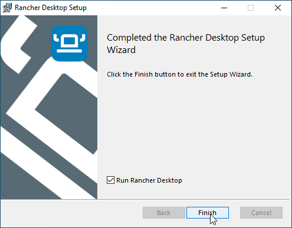

Method 2 - Rancher
As mentioned earlier, Rancher is the software the controls the docker engine on your desktop. With this method we will run the sphinx pdf build scripts inside docker.
Warning
This method is completely optional. If you plan on putting your sources into a github repository then you can have github build the documentation for you, each time you push the sources to github.
What this method does allow for is if you want to build completely separate from github or if you want to build your pdf relatively quickly (it takes a couple of minutes via github workflow)
If you do decide not to install rancher, then the only real downside is that you will not be able to build the PDF images locally on your machine. If that’s OK with you, go ahead and skip this entire section.
Download and install Rancher

In your favorite web browser navigate to this page:
https://github.com/rancher-sandbox/rancher-desktop/releasesClick on the “Windows” link to download the latest windows version.
Continue install

Click Next.
Click Install.

Wait
Click Finish.
Don’t restart - yet
Click No.
Warning
Clicking no here allows you to choose the initial setup for rancher (namely chosing the docker engine and not enabling Kubernetes). It does produce an error however it is fixed after a reboot.
Configure the engine

Disable (uncheck) Kibernetes.
Select “dockerd” as the container software.
Click Accept.
Close and restart
Click Close and restart.
Note
After some time rancher will throw an error - this is because WLS2 and the docker image are not yet installed. Reboot your PC.
Logging back in

After restart, upon log in WSL2 is installed.
Wait for WSL2 deployment

Starting Rancher again shows WSL2 and the docker WSL image are being deployed.
When the messages in the bottom corner are gone, your rancher installation should be complete.
Pull required docker images

You can verify that docker is up by opening a command prompt and typing docker ps. It should just return the header row (starting with ‘CONTAINER ID’). This tells us that the docker CLI tool can talk to the docker server.
Install the sphinx images. Firstly, the base image.
docker pull sphinxdoc/sphinx
Install progress
Next install the the PDF version. The PDF version of sphinx is over 2Gb, so the download may take some time.
docker pull sphinxdoc/sphinx-latexpdf
Verify images in Rancher desktop

Installed images are listed in Rancher.
In Rancher desktop you can click on the images tab to see installed images.